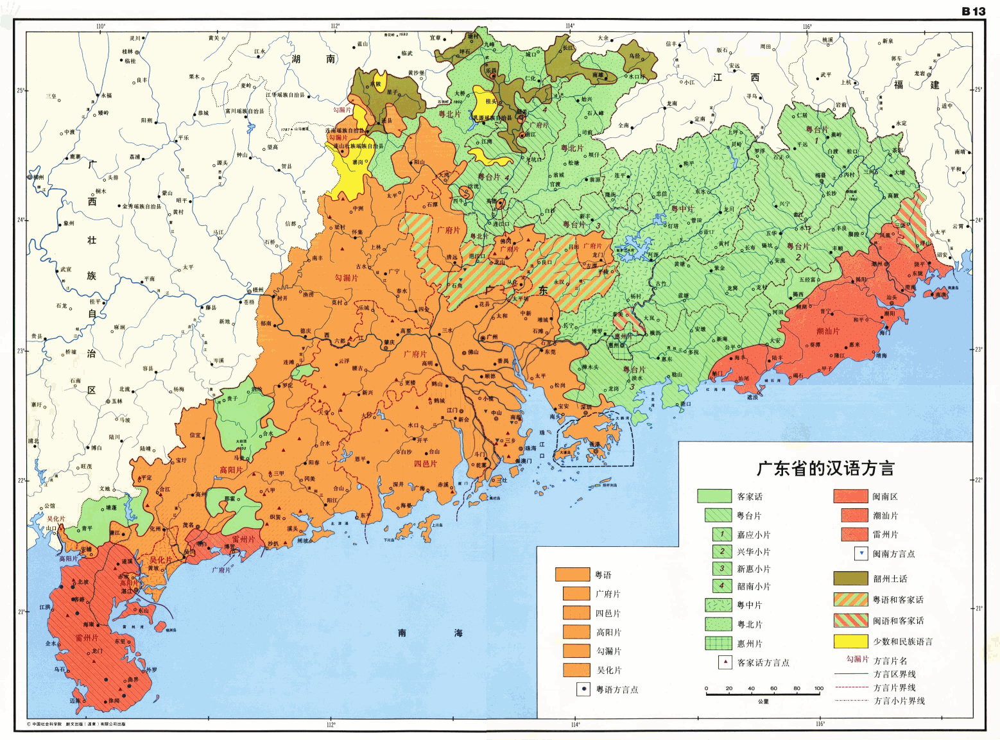
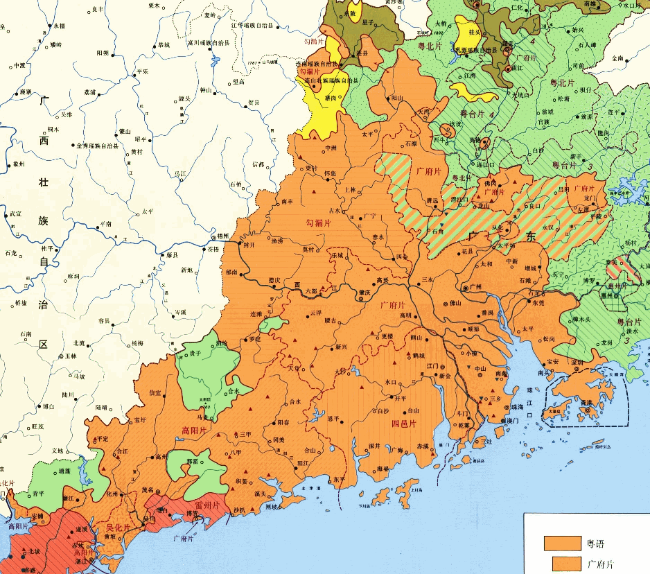

“宝岛统帅放话了，还特意用了‘北京当局’字眼强调‘对等’原则”，柴禾妞念着情报，“看来只要南京还不改名，南北朝对峙的局面就不会结束，‘北京当局’在发布涉及长三角一体化进程相关公告的时候已经‘自我矮化’了”。
“那东京改不改名呢？”郭春海评价，“就看国际化大都市华语第一精日论坛的氛围，还是更喜欢三国演义，尤其是光荣版”。
“名不正则言不顺，言不顺则事不成”，柴禾妞引经据典，“除了‘钟声’继续更新拼月票之外，‘钧声’也开新书连载了，看来中统军统之间的斗争很激烈嘛，不知道国统那边什么动静”。
“你看国台办继续坚持养寇自重不动摇的态度就知道了”，郭春海提醒，“看评论说‘郭同欣’这帐号听起来就没什么气魄，又不是‘声’字辈，上不去首页推荐混不成白金写手”。
“上梁不正下梁歪，玄学碰瓷已经成为兲朝基本国策了”，柴禾妞改口，“这么说来，难道‘俞强声’准备代表色目屠刀之下的全球基督徒强硬的发声？而‘俞正声’还要兼任梵蒂冈驻北京当局大使代表基督教正统发声不成？”
“有本地情报了”，郭春海提醒柴禾妞，“九省通衢の煎蛋正在引经据典”。
“康宁翰定律和墨菲定律”，柴禾妞保存情报，“啥意思？”
“字面意思你肯定看懂了，而字里行间的意思，需要结合色目情报掮客所炫耀的幕后黑手一贯作风理解”，郭春海提醒，“不外乎幕后黑手有诈胡权，还金口玉言并言出法随，专门散布瘟疫饥荒战争的啥‘死神’爱上了什么废柴，就赐予其超凡运气，授予硕士学位，并提供配套的团队，唤作‘叹息的亡灵’之类”。
“伤寒马力与千岛湖之试炼吖”，柴禾妞想起来了，“连十九年七闰都不知道就能担任钦定扫帚星乌鸦嘴，胡说八道都有幕后黑手指使群众演员圆谎”。
“这是本地新闻”，郭春海再次提醒，“俞强声虽然早就跑路了，但是俞正声可是担任过大梁国摄政呢，驻地就在九省通衢”。
“你是说，梵蒂冈会选择九省通衢作为突破口？”柴禾妞猜测，“也对，幕后黑手不止一个，色目中央如此嚣张的投放新时代王冠叫嚣着种族灭绝，基督徒怎么可能会放弃抵抗引颈就戮”。
“也许吧”，郭春海不置可否，“结果如何就看前台招牌活广告的‘言灵’对决了，其实体现了幕后黑手之间的‘武德’对决”。
“说起来奇怪，或者是我还不太明白游戏规则”，柴禾妞问，“俞强声跑路了，为啥对俞正声一点影响都没有还一路青云直上主席台呢？”
“体制内的游戏规则就是‘忠孝不能两全’吖”，郭春海解释，“无论是苏修特色的披了红皮的东正教，还是兲朝特色披了红皮的儒教，传承方式都一样，不是教父教子，就是座师门徒”。
“一般都是担任‘秘书’职务的亲信吧？”柴禾妞虽然接触体制相关内幕不多，但是在市面上其它八卦当中总能找到部分相关爆料，“记得看过色目情报掮客网络直播的兲朝特色豪门恩怨伦理剧，说领导只有个闺女，于是退了宁可提拔秘书也不提拔侄子。否则按照当初邓丕平拉拢豪门贵种时许诺的‘跟咱混有韭菜吃，每家一个副部级’的政治规矩和组织纪律，将来自家闺女往哪里摆？没准还会被祠堂嫁出去，其实就是卖出去呢”。
“原来‘军网最黄黄网最军’还在的时候，上面有色目情报掮客爆料过了，说政治上俞强声被算作康生的儿子，从事情报工作的结果是背了师门的黑锅”，郭春海补充，“当初粉碎‘蒙独’的时候还没有《反分裂国家法》，不能依法治国永不翻案。于是被打倒的‘南蒙古人民革命党’随着平反乌兰夫一起翻盘了，这‘北方一片云’又成了披了一层民族自治区画皮的君主国。那时候康生早死了，于是门徒们见势不妙赶紧跑路，跑路的结果是替斗争胜利者那些见不得光的动作背黑锅，俞强声只不过是知名度最高的一个”。
“那你说金无怠到底是谁出卖的呢？”柴禾妞有些好奇，“隔三岔五网上就有舆论破口大骂，尤其是少数民族帐号，喷得最凶的那帮以通古斯云孝子为首的云包衣阿哈们，就是叫嚣通古斯反攻倒算的伤寒马力的粉丝们”。
“我不知道”，郭春海承认情报有限，“但是这种多面间谍一旦曝光，通常都自称作为地下沟通渠道有大功于双方，上纲上线到世界和平的程度”。
“粉碎台湾核野望的张宪义也这么说，自称所作所为‘有利于中美双方’，这是成功跑路了”，柴禾妞同意，“要是当年金无怠不是在当地被捕而是提前跑回兲朝，估计还会这么说”。
“继‘北方一片云’之后，‘南边一片叶’也跳出来了”，柴禾妞看到情报，“有人大代表提出国库拨款全面推行粤语教育，真是‘南夷与北狄交，中国不绝若线’吖”。
“有个国家，唤作赤道几内亚，第一官方语言西班牙语，第二官方语言法语，本来是最不发达国家之一，但是发现石油之后就‘一国两制’了”，郭春海忽然扯到撒哈拉以南非洲，“首都马拉博，坐落在外海比奥科岛上，所有的豪门贵种都在那里，凭借对欧盟尤其是法国出口石油换取援助，大陆则任凭其自生自灭，还买了一条法国军舰提防贱种屁民革命军上岛”。
“你这是在指桑骂槐”，柴禾妞立刻反应过来了，“说香港指使买办盘踞广州，大政方针是‘只要珠三角，其它地方都长草’，省长马兴瑞坚决贯彻落实香港主子指示精神”。
“就是这样”，郭春海说，“如果说推广普通话，动作最大的是法国，大革命之后把巴黎口音强行贯彻落实到全国了，坚持一百七十年不动摇，所有方言都消灭了”。
“我听说还有个布列塔尼语，不是法语方言”，在郭春海的言传身教之下，柴禾妞也学会了预则立不预则废，凡是情报中出现的内容所涉及的相关问题，都会顺便查查资料有备无患，“因为是凯尔特人，所以当作少数民族对待”。
“但是学校里教授的布列塔尼语，是人工炮制的那种，不是孩子在家里听爷爷奶奶说的那一种”，郭春海解释，“所以很多人也认为这种教育没必要，耗费宝贵时间精力投入到无用功之上，还不如只学法语呢”。
“你认为法国会有以保护方言为借口彻底清算大革命的动作？”柴禾妞听出言外之意，“比方说妈控大统领出面道歉，费加罗报于头版头条连载特约评论员‘高卢声’划时代大作《奥斯维辛幸存者的古拉格日记》，然后波旁或拿破仑就重新加冕新时代王冠了”。
“也有可能是自废武功自毁长城自乱阵脚然后再路径依赖，替德意志民族神圣罗马帝国作嫁衣裳”，郭春海提醒，“德法已经签了《亚琛协议》决定全面合作，在查理曼那时候，既没有法国也没有德国”。
“可是我听说妈控大统领是罗斯柴尔德的女婿吖，但是经由拉比认证的真老婆不出面，只是找这个飒爽美少年借种而已”，柴禾妞问，“当年的老师兼妈，也就是现在的老婆兼妈，不过是其‘代孕者’而已，明面上塞给他只是为了让他断子绝孙，不影响亲生的孩子按照母系传承的接班人之地位”。
“罗斯柴尔德是按照英语发音翻译的，法语念作洛希尔”，郭春海纠正，“实际上这个字眼，是德语‘红盾’的意思，希伯来太君是四海为家的世界公民，入乡随俗到什么山上唱什么歌，从来也没把国家文化语言放在眼里”。
“听你说过‘巴别塔’的典故，真是希伯来嫡传兵家理念”，柴禾妞同意，“色目中央刚刚定点清除兲朝驻以色列大使，就迫不及待远征兲朝本土了”。
“没错，并且战术是蚕食而不是鲸吞”，郭春海补充，“广东省内本来就有多种汉语方言①，按照覆盖面积计算，粤语还不到一半，即便是粤语内部也分许多片，现在香港买办鼓吹的这一种，是珠三角通用的广府片②”.
“你是说将欲取之必先与之？”柴禾妞问，“色目中央准备先把岭南搅合得四分五裂，再各个击破逐一吞并？”
“岭南还包括广西呢”，郭春海提醒，“广西的东南部也有部分地区讲粤语③，但广府片仅限方言岛”。
“高，实在是高”，柴禾妞竖起大拇指，“色目金融寡头财大气粗，色目情报掮客人多势众，这一出‘五路攻夏’‘四路伐金’的扫荡，真是远在特拉维夫的兵法兲才谈笑风生合纵连横运筹帷幄叱咤风云的金戈铁马战争剧吖”。
“你能说出‘合纵连横’这种字眼，就应该深入领会其中所蕴涵的充沛兵家理念”，郭春海教育，“而不是作为惯用语脱口而出，实际上不过脑子”。
“我恶补过，在那战国时代末期错综复杂的国际局势当中两条外交路线图”，柴禾妞虚心受教，同时表现自己朽木可雕萝莉可教，“苏秦号召所有受剥削受压迫的小地主阶级联合起来，张仪则以文攻武吓分化瓦解抗秦救国统一战线期待能有哪个傻哔率先跳出来膝盖生根头顶绿得发黑贱到骨子里去了起到模范带头作用”。
“民间传说这二位口才出众的外交官，都是传奇兵法家鬼谷子的得意门生，按照师门指示分别扮演剧本分配的角色承担组织安排的岗位职责”，郭春海补充，“但是从后世历史学家的上帝视角才能观察到这一点，而在当时当地的每个具体当事人看来，只有‘主战派’与‘主和派’的斗争”。
“宏观历史学与微观历史学”，柴禾妞哪壶不开提哪壶，“看来你也从幽州目标那里学到不少东西”。
“是啊，学无止境嘛，三人行必有我师焉，活到老学到老”，郭春海不以为耻反以为荣，“你从娱乐至死の色目逗哔那里也能学到不少东西”。
“是啊，学到了如何把屠夫的凶残化为一笑”，柴禾妞不以为耻反以为荣，“比方说国际化大都市华语第一精日论坛的光荣版三国爱好者，就说当初东吴内务部负责人张昭捞过界插手外交事务，成天劝碧眼紫髯投降”。
“按照吟游诗人的说法，张昭是张仪转世”，郭春海补充，“黄巾起义失败了没关系，汉中还有革命根据地，只要能寄生在什么武德之上，立刻就可以成为官方意识形态，首席牛鼻子就有‘大贤良师’的封号”。
“色目逗哔说，张昭每天就是板起一张淳朴诚恳脸做忠心耿耿状，缠着碧眼紫髯谏言‘不能打吖，主公’”，柴禾妞回忆娱乐至死版三国演义，“碧眼紫髯下定决心之后当众拔剑砍桌子，剑断了，换斧子也断了，怎么都砍不断。这时张昭出来了，‘就知道主公不自量力妄图螳臂挡车，为了避免被历史の五对负重轮碾为齑粉的悲惨下场，昨儿半夜咱不辞劳苦特意掉包，换了精金秘银山铜玄铁桌’”。
“你已经知道了‘清真’字眼本来是道教术语，而‘上帝’一词本来特指‘昊天’”，郭春海说，“可以认为这是外来意识形态本土化当中的碰瓷操作，运用当地土著日用而不知的一些概念，实现鸠占鹊巢反客为主”。
“我还知道虽然市面上色目逗哔炒作‘唐僧取经’，但是实际上公元前后贼秃就已经渗透进来了”，柴禾妞说，“在最高领导人亲切关怀之下，都不用十四年，两年就回来了，洛阳白马寺又称虽远必诛の强汉中央疙瘩头、迦叶、阿难著作编译局”。
“你说为什么后来东突大唐龙裔又派唐僧过去取了一次？”郭春海提问，“从历史和架空两个角度分析”。
“从历史看，唐僧并没有获得最高领导人的支持，属于偷渡出境”，柴禾妞回答，“从架空看，那是因为市面上歪嘴和尚念错经，还垄断了梵语教育，这才导致原教旨主义者不远万里取真经，吟游诗人还续了后传，说又念歪了之后再派人去天竺取‘真解’也就是教学参考书”。
“从历史看，自称道家祖师爷老子后裔的东突大唐龙裔，取完经之后还灭佛呢，贼秃破口大骂的三武一宗全在北朝”，郭春海继续提问，“但是为什么市面上贼秃反而越来越多了，在改寺为观和改观为寺的斗争中，牛鼻子总是落下风呢？”
“因为牛鼻子在对‘绝地天通’反攻倒算的过程中，重建神权政治的野望失败，从此清静无为走上层路线了”，柴禾妞回答，“牛鼻子对知识的垄断程度类比门阀学阀，民间信仰的空白就被贼秃填补了”。
“那么为什么在南朝，门阀势力和种姓制度比起北朝来只强不弱”，郭春海继续提问，“为啥没有大规模灭佛运动，贼秃反而更加香火旺盛呢？”
“因为土地垄断程度更高，贼秃只能与民争利不能与官争利，门阀看贼秃作为精神鸦片供应商可以麻痹贱种屁民，就随它去了”，柴禾妞回答，“还有就是中华民族传统文化的固有缺陷或曰劣根性，贼秃带来因明学也就是逻辑学，击中了兲朝特产文曲星诡辩家的要害，由于与意识形态关系不大，所以被蠕棍抄袭剽窃借鉴了，形成了宋明理学”。
“宋明理学已经成为官方意识形态了，蠕棍垄断了‘国师’席位”，郭春海继续提问，“那么看在眼里急在心里的牛鼻子，对此有什么反应呢？”
“当然是与时俱进并且两手抓两手都要硬，一方面洋为中用，顺便拉拢其它边缘化学阀，正如收编阴阳家那样收编墨家，走唯物主义路线”，柴禾妞回答，“另一方面利用蠕棍不语怪力乱神的破绽，收编基层流传已久巫术型民间信仰，炮制出充沛的‘神明’占领每一个细分市场，专挑飒爽美少年去爱”。
“这就是架空当中的‘天庭’，与凡间‘朝廷’差不多④”，郭春海继续提问，“既然天无二日民无二主，那么以‘天庭’影射牛鼻子的接班制度是什么样的呢？”
“当然是铁桶江山万万年红色基因代代传，姓张的世袭玉皇大帝位置，体现在凡间就是‘天师门’‘正一道’”，柴禾妞回答，“至于不姓张的牛鼻子，或者膝盖生根头顶绿得发黑贱到骨子里去了在体制内当奴才，或者如同唐僧那样，偷渡出境自费留学，学成归国之后开创异端④”。
“最后一个问题”，郭春海继续提问，“为什么夹不同鸡巴者或持不同学术观点者开创的是异端而不是异教呢？”
“因为话语权把持在走率兽食人路线的当权派手里，只要抢先念诵绝对真理比如‘一加一等于二’之类占领至高点，后面所有持相同学术观点者，都会被喷为‘复读机’或者被收编为门生学徒。哪怕没来及先发制人，还可以撒谎吹牛炮制远古伪证，顺便将其它质疑以‘政治敏感’理由‘亦当删去’”，柴禾妞回答，“我见得最多的，就是《人民观察家报》野生国师到处碰瓷，卓越的色目情报掮客掺和每一个政治和意识形态话题，无论看见什么观点都以固定短语‘记得马督工早在公元前221年就说过’回复，然后就会出现云包衣阿哈吹捧西肃慎后清国太祖高皇帝伤寒马力”。
未完待续
- ①
- ②
- ③

- ④ 《知乎问答№017：中国真的在文化、数学、医学上都曾经领先世界几百年吗？》《知乎问答№181：华山论剑王重阳的头名是否实至名归？》